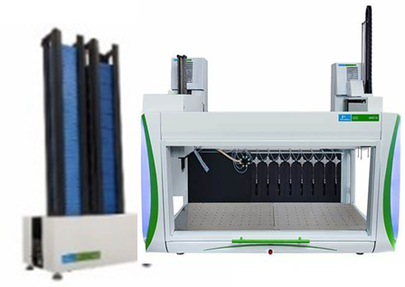
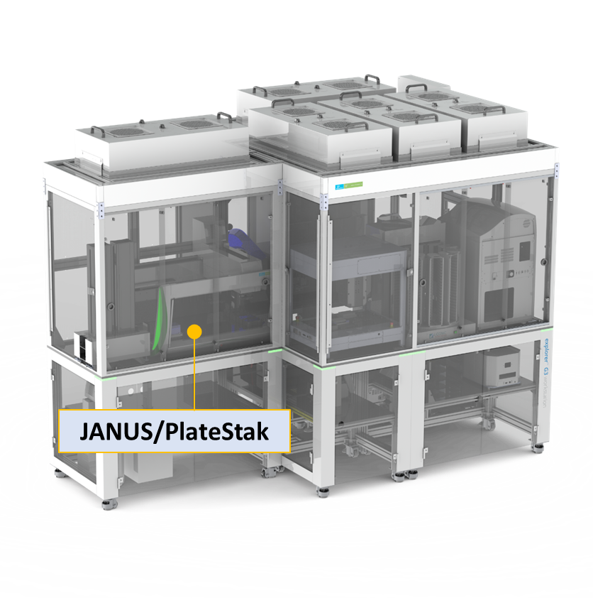
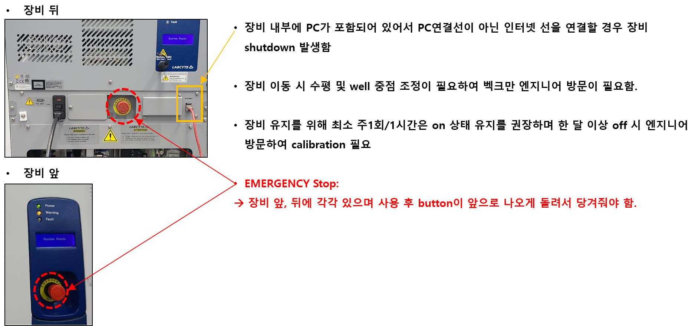
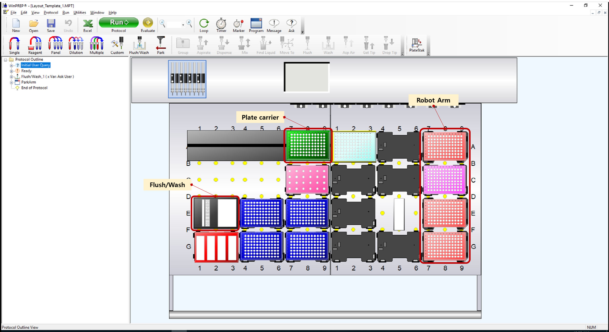

3 JANUS
- 
3.1 장비소개
revvity (구 perkin elmer)사의 8-channel pipettes을 이용하는 liquid handler
1 - 1000 ul 의 volume range
5 ul volume: <2% CV
Unit process: Liquid transfer - PCA mix, PCR mix, Gibson mix, Yeast TF mix, Enzyme, broth, cell spotting
다양한 labware의 사용이 가능하여 자유도가 높은 liquid handler 입니다.
Automatic stacker가 부착되어 있어 최대 10 rack의 tip 사용이 가능합니다.
- 25 ul/175 ul
3.2 장비위치
- Fully Automation_DNA workstation housing 내에 위치

3.3 메뉴얼파일 위치
- share:\19_Equipment_장비_user’s_guide
3.4 Labware
3.4.1 Support: 위치를 고정하는 Tile
- Plate-Adapter Support Tile
- Plate-Adapter Solid Med Support Tile: with Robotarm
- Plate Carrier
3.4.2 Labware: Disposable Tips
- 25ul Conductive Filter RoboRack Tips
- 175ul Conductive Filter
- 900ul Conductive Filter Tips
3.4.3 Labware: plate, tube
▶ 목록 외 labware 사용 시 ’Labware setting’을 통해 추가 가능함
- 1 Well Plate
- 108 well plate
- 1536 well plate
- 384 well plate
- 384 square well: Nunc, Packard, Porvair, Costar
- 384 well clear bottom: Biocoat, Costar, Falcon, Greiner, NUNC, Packard, PE ViewPlate,
- 384 well clear bottom low volume: Greiner
- 384 well filter plate: Whatman
- 384 well flat bottom smal volume: Greiner
- 384 well PCR plate: Costar, MJResearch, Polyfiltronics
- 96 well plate
- 96 Deep Well Filter Plate: 3M Empore, Ansys, Promega, Qiagen, Varian,
- 96 Deep Well plate: BIONEER, perkinelmer-2ml, Beckman, Elkay, Axygen, Falcon-1ml, Mega, Polyfiltronics, Porvair, Qiagen, Seahorse, macrogen_oligo, Bioneer_oligo_plate
- 96 Well Clear bottom: Biocoat, Costar, Falcon, Greiner, PE ViewPlate,
- 96 well Filter Plate: Milapore, Packard, Whatman
- 96 well flat bottom: Evergreen, NUNC, Porvair, Costar
- 96 well PCR plate: BioRad, eppendorf, eppendorf_on_ice_rack, SSIBIO, SSIBIO_on_ice_rack
- 96 well PCR rack: KRIBB, perkinelmer, 0.2ml_8-strips_tube
- 96 well round: Costar, Corning, Falcon
- V-bottom plate: perkinelmer_V-bottom_Shortplate, Greiner
- Big well plate
- 12 big well: Evergreen
- 24 big well: Evergreen, Packard
- BioTx
- Drug Transport (Caco-2) Plates
- Microfug
- KRIBB_24Pos_Tube
- KRIBB_2ml_Tube
- Vials
- 2ml_vial_32pos
3.4.3.1 Labware: Reservoirs
▶ Reagent 분주 시 reaction 수에 따라 적정 용량의 reservoir 를 사용하면 protocol 시간을 단축할 수 있습니다.
|
Reserovir |
trough |
24 well (deep) |
48 well |
Washbolwl + 1trough |
Washbowl+ 2 trough |
4 well |
8 row |
12 column |
12 column (low profile) |
1 well |
|---|---|---|---|---|---|---|---|---|---|---|
|
Well |
4 |
24 |
48 |
1 |
2 |
4 |
8 |
12 |
12 |
1 |
|
Volume (ml) |
60 |
10 |
5/7.5 |
73 |
21 |
287 |
||||
|
Part. no. |
No77777236 |
No777237 No777238 |
600 9710 |
600 8700 |
600 8730 |

3.5 프로토콜 만들기
3.5.1 Base Layout
[Layout_Template_1.MPT] 파일을 열어 ’다른 이름으로 저장’하여 작성.
Plate Carrier, Tip waste, Flush/Wash, Robot Arm 위치는 고정으로 변경할 수 없음. (하드웨어 상의 고정 위치)
